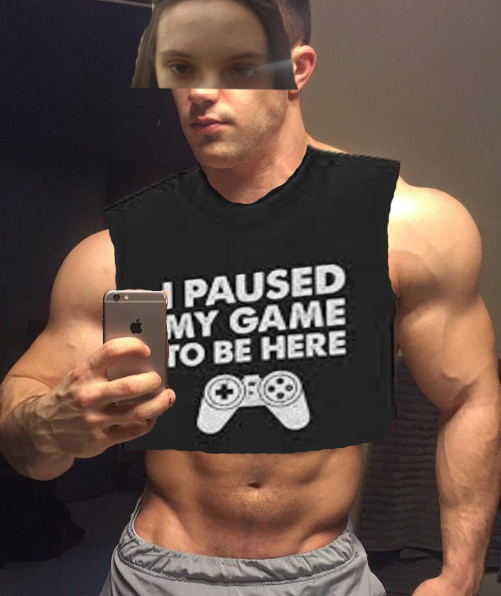
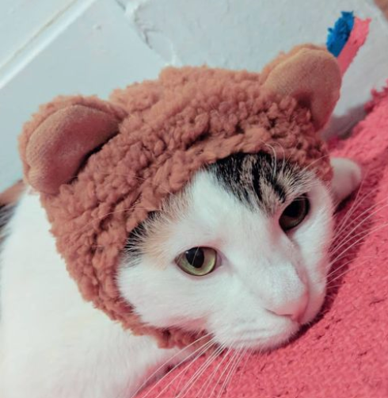
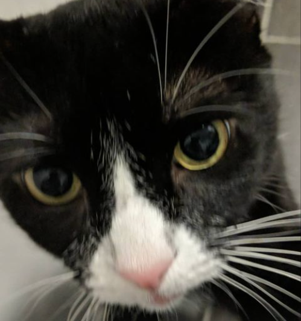
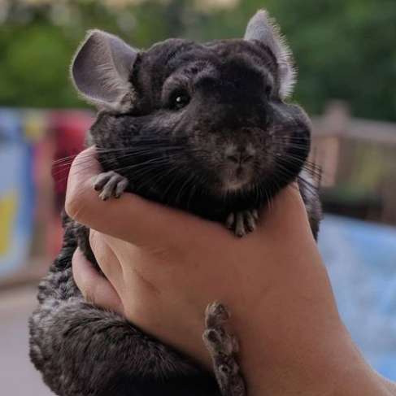
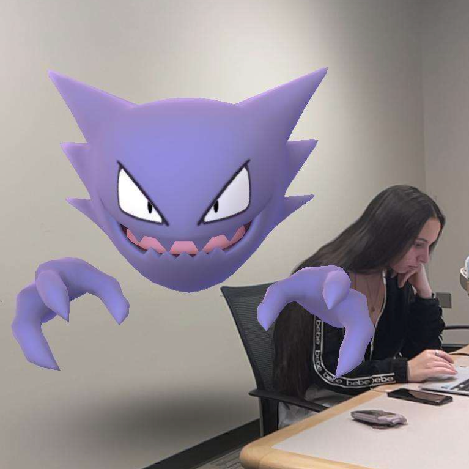
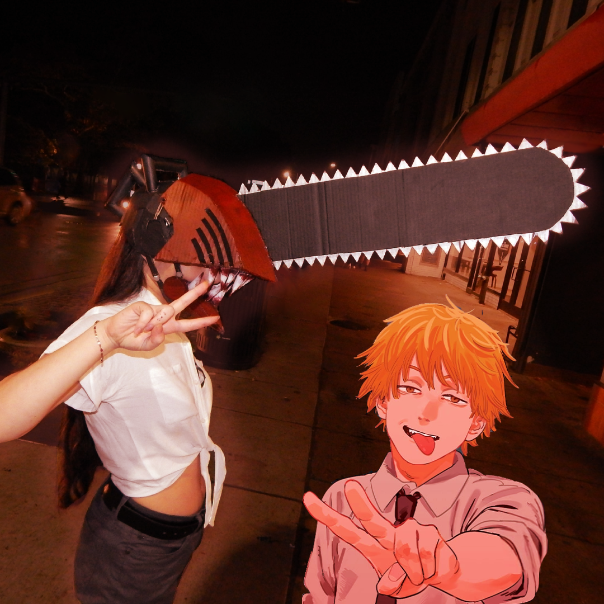
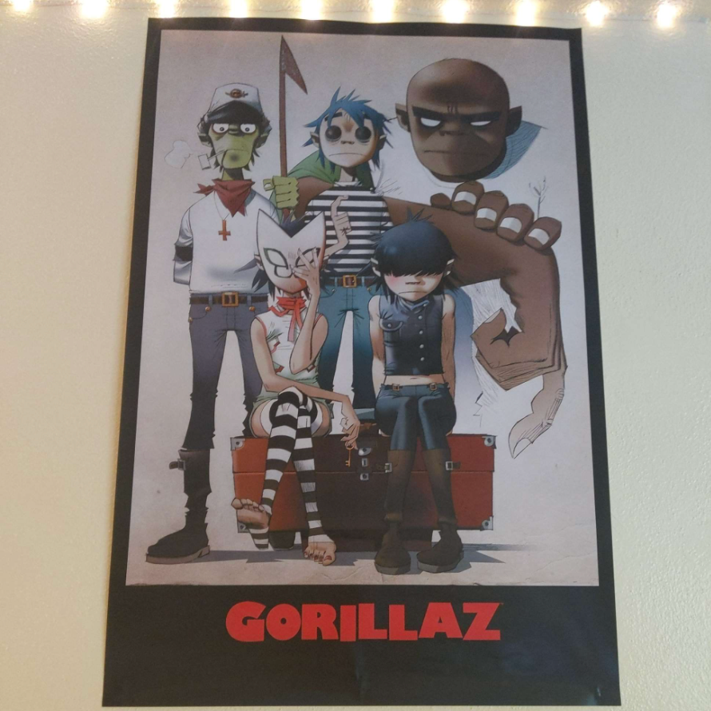
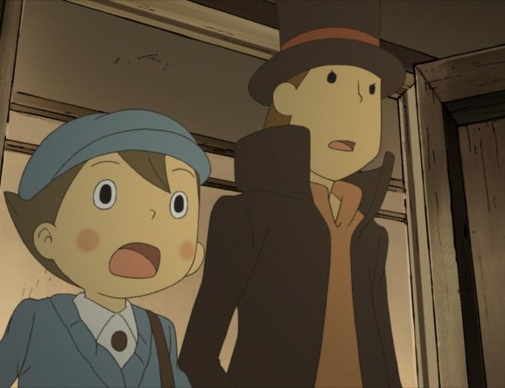

Hover/tap an image to enlarge it!
My name is Evelyn!

My favorite Hello Kitty character is Keroppi!

I have two cats and a chinchilla!



I am besties with haunter

I dressed up as chainsaw man this Halloween.

I have a cool gorillaz poster in my room.

My favorite puzzle game is Professor Layton.
